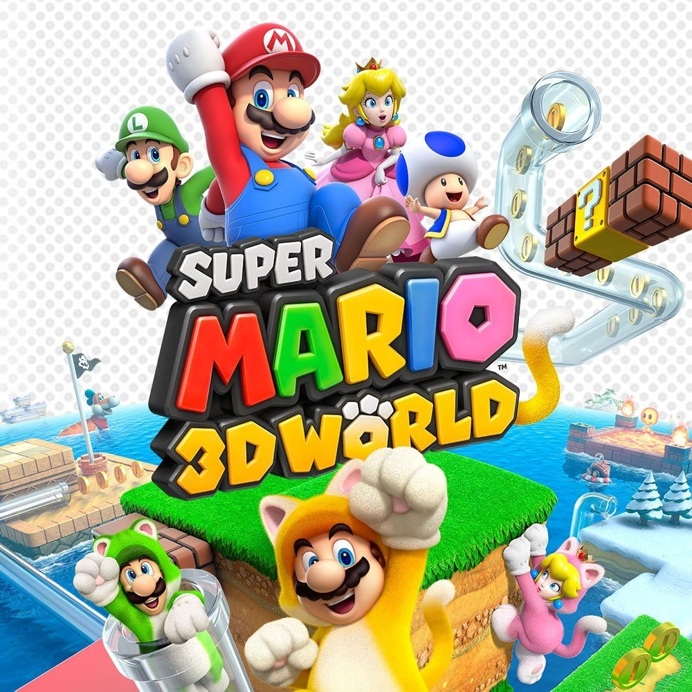
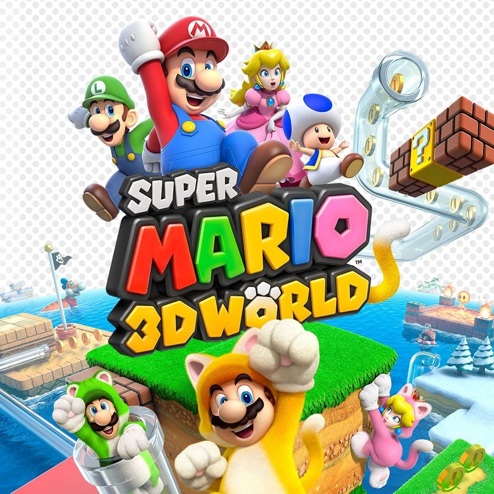

(Game Release in US)





| Rank | Name | Composer | Year (Game Release in US) |
System | Runtime |
|---|---|---|---|---|---|
| 1 | Outer Wilds |
Andrew Prahlow | 2019 | PC, Xbox One, Playstation 4 | 1 hr 9 min |
| 2 | Super Mario Galaxy |
Mahito Yokota and Koji Kondo | 2007 | Wii | 2 hr 9 min |
| 3 | Earthbound |
Keiichi Suzuki, Hirokazu Tanaka, Hiroshi Kanazu, and Toshiyuki Ueno | 1995 | SNES | 59 min 49 sec |
| 4 | Legend of Zelda Wind Waker |
Kenta Nagata, Hajime Wakai, Toru Minegishi, and Koji Kondo | 2003 | GameCube | 2 hr 34 min |
| 5 | Super Mario 3d World  |
Mahito Yokota, Toru Minegishi, Yasuaki Iwata and Koji Kondo | 2013 | Wii U | 1 hr 57 min |
| 6 | Risk of Rain 2 |
Chris Christodoulou | 2020 | PC, Switch, Playstation 4, Xbox One | 1 hr 54 min |
| 7 | The Last of Us |
Gustavo Santaolalla | 2013 | Playstation 3 | 54 min 34 sec |